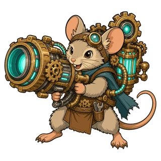

Mùa 1 · Cập nhật 09 · 1 tháng 11
Quy tắc chiến đấu
- Sát thương tính theo Sức mạnh kỹ năng vẫn không phải là đòn tấn công, trừ khi mô tả kỹ năng ghi rõ đó là đòn tấn công.
- Đã sửa lỗi dùng kỹ năng là đòn tấn công nhưng không được đếm cho hiệu ứng “mỗi lần ra đòn tấn công” và “cứ mỗi N đòn tấn công”. Giờ đây mỗi lần sử dụng, kỹ năng là đòn tấn công được tính là một đòn tấn công.
Thay đổi từng thú bông
Flamo
- Nắm Đấm Lửa: Giờ đây sát thương đầu tiên được tính là đòn tấn công. Sát thương Thiêu đốt vẫn không phải là đòn tấn công.
Mouseball
- Pháo Răng Cưa: Kỹ năng này giờ là đòn tấn công. Vẫn là sát thương vật lý tính theo Sức mạnh kỹ năng với tỉ lệ như cũ.
- Ngắm Cố Định: Tầm đánh tăng thêm khi đứng yên giờ đây áp dụng cả cho Pháo Răng Cưa, không chỉ cho đòn đánh thường.

Optimouse
- Pháo Laser: Mốc tính sát thương đổi từ Sức tấn công thành Sức mạnh kỹ năng. Vẫn là sát thương phép với tỉ lệ như cũ, và không còn là đòn tấn công.